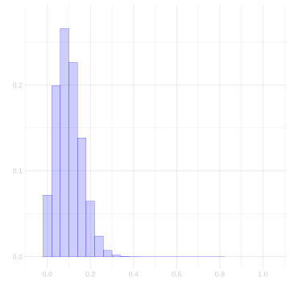
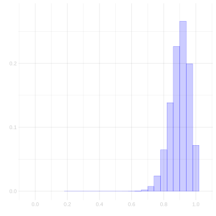

Download this assignment — unzip it, open homework-bootstrap.qmd in Positron, and answer inside the answer blocks.
$$ \newcommand{X}{} \newcommand{Y}{} % A hex digit after # inside a macro body is eaten by build-time expansion, so digit-leading hexes spell # via .
$$
NoteA note on the assignment
I wrote this homework while I was pretty burned out. I asked an AI agent to assemble some exercises I’d written in previous years and add a couple new ones. I revised the new ones and assumed the old ones had been reproduced faithfully; they weren’t 100%, and that is on me. I’m sorry for the confusion.
Two clarifications:
x is just a different survey response, in this case whether the voter is Black or non-Black. There were multiple responses to the survey. We will come back to this later in the semester where we consider how turnout varies between different groups of voters.
The assignment asks for a Clopper–Pearson interval. I intended the centered Binomial interval we used in class. What is this Clopper-Pearson thing? Recall from the previous homework that coverage with an estimated proportion is imperfect. But you can calculate exactly how imperfect it will be. Clopper–Pearson uses a technique called test inversion to adjust for this; as a result, you get perfectly calibrated interval estimates.1 If you are interested in this topic, there is an extra credit opportunity to do a little writing on it. Let me know.
The questions below are the assignment you received. The coverage solution compares all three methods: the centered Binomial interval, the bootstrap interval, and Clopper–Pearson. The Tip callouts and code annotations are help for working through the solutions.
The support code loads a simulated Georgia voter population into pop. Its binary turnout response is y. The population size is m. The indices J draw our sample of size n = 625; X = x[J] and Y = y[J] are the sample responses.
cat("Population frequency θ =", round(mean(y), 3), "\n")
Population frequency θ = 0.698
cat("Sample frequency θ̂ =", round(mean(Y), 3), "\n")
Sample frequency θ̂ = 0.707
cat("Sample size n =", n, "\n")
Sample size n = 625
cat("Population size m =", m, "\n")
Population size m = 7233584
Exercise 13.1
Exercise
Draw a fresh sample of size n from pop, save it as sam, and plot the sampled values of x and y. Because both variables are binary, jitter the points so that repeated observations do not sit exactly on top of one another.
Draw row numbers with replacement. Repeated indices mean the same person can appear more than once.
2
Select those rows, keeping both response columns together. The comma separates row selection from column selection; leaving the column position blank keeps every column.
3
Plot the two responses from sam. Jitter separates overlapping points visually; it does not change the stored responses.
Bootstrap vs. Binomial
In class, we argued that for a binary response, the bootstrap sampling distribution of the sample frequency \hat\thetais our plug-in Binomial estimate of the sampling distribution: the distribution of the frequency of ones in n draws, with replacement, from a ‘population’ where that frequency is \hat\theta—our sample. Let’s confirm that empirically in our Georgia turnout poll, where Y is our sample of n=625 responses.
Exercise 13.2
Exercise
Draw 10,000 samples from the bootstrap sampling distribution of \hat\theta. Plot them as a bar plot, and overlay the plug-in Binomial estimate—the probabilities \hat P(\hat\theta = s/n) = \binom{n}{s}\hat\theta^s(1-\hat\theta)^{n-s}, which you can get from dbinom(0:n, n, mean(Y)). Do they agree?
TipFunctional programming: put the repeated thing on the left
This starter counts to 10,000 and then throws the count away — nothing inside the braces uses .. The book writes the same repetition by repeating the sample instead of a counter, and by giving each of the two operations a name.
rep(list(Y), 10000) is ten thousand copies of the sample, resample draws once from a sample, estimator turns a sample into a number. Either form answers the exercise. The second one lets you call resample(Y) by itself to see what one bootstrap sample looks like, and its estimator is the same function you would apply to the real sample — which is the point being made about \hat\theta. See Repeating is looping.
Sample positions within the observed sample, with replacement. seq_along(Y) lists its positions.
2
Return the responses at those positions. This function returns one bootstrap sample.
3
Keep the statistic separate from the sampling operation: this function turns one sample into one estimate.
4
Make a list with 10,000 copies of the observed sample, one input per repetition.
5
Apply resample to each list element. The result is a list of bootstrap samples.
6
Apply the estimator to each sample and collect the scalar results in a numeric vector.
7
Convert counts to proportions for the horizontal axis. dbinom supplies the probability of each count under the plug-in Binomial distribution.
Yes. Up to simulation noise, the bars sit right on the curve. They should: each bootstrap draw is the frequency of ones in n draws with replacement from the sample, and the Binomial plug-in estimate is the distribution of exactly that.
Coverage: How Many Bootstrap Reps Do You Need?
The bootstrap gives us a confidence interval by simulating the sampling distribution of our estimate. But the simulation is itself a random draw—we only take a finite number of bootstrap samples. If we take too few, the interval we calibrate will be noisy, and its coverage might fall short of the 95% we promise. How many bootstrap reps are enough?
We can check this in a setting where we know the right answer. For a binary response, the exact sampling distribution of the sample frequency \hat\theta is Binomial, so we can compute an exact 95% confidence interval (the Clopper–Pearson interval) and compare it to the bootstrap interval.
Binary case
Our Georgia turnout population y has true frequency \theta = 0.698. Draw 500 fresh samples of size n=625 from this population. For each sample, compute two intervals:
The exact Binomial 95% interval (Clopper–Pearson). In R, binom.test(s, n)$conf.int returns it.
A bootstrap 95% interval using your bootstrap.interval function with B bootstrap reps.
First use B=1000. Compute the coverage of both the exact interval and the bootstrap interval across the same 500 samples, and report the two numbers. They should agree up to simulation noise.
Then do this for several values of B: 10, 30, 100, 300, 1000, 3000. For each B, compute the fraction of the 500 samples whose bootstrap interval contains \theta. Plot that coverage fraction against B on a log scale. Add a horizontal line at 0.95.
What do you see? How many bootstrap reps are needed before the bootstrap’s coverage matches the exact interval’s?
Exercise 13.3 (Part A – Binary coverage vs bootstrap reps)
Exercise
Before writing the function, use B=1000 to calculate the exact-interval coverage and bootstrap-interval coverage across the same 500 polls. Report both, and confirm that they agree up to simulation noise.
Then write a function coverage.vs.reps that takes a population vector y, a sample size n, a vector of bootstrap‑rep counts reps, and the number of simulated polls N. It should return a data frame with columns reps and coverage giving the fraction of intervals that contain the true population mean for each rep count.
Use it to produce the plot described above.
coverage.vs.reps =function(y, n, reps =c(10, 30, 100, 300, 1000, 3000), N =500) {# your code here}
TipHint
Loop over reps. For each rep count B, loop over N polls. Inside that loop: - Draw a fresh sample from y. - Compute the exact Binomial interval with binom.test. - Compute the bootstrap interval using bootstrap.interval but with only B bootstrap draws (you’ll need to modify bootstrap.interval to accept a reps argument). - Record whether each interval contains mean(y). - Average over the N polls to get coverage for this B.
Part B – Convergence rate
Look at the plot. Does coverage approach 0.95 from below, from above, or does it oscillate? About how many bootstrap reps are needed to get within 0.005 of the target coverage (i.e., coverage between 0.945 and 0.955)?
Now repeat the same experiment with a different population frequency, say \theta = 0.2. Does the answer change?
SolutionSolution
We need bootstrap.interval for this calculation, so define the function requested in Vote-History Part A first.
Prepare one copy of the sample for each bootstrap repetition.
3
Turn each copy into a fresh bootstrap sample.
4
Calculate each bootstrap sample’s mean.
5
Center the interval on the observed sample mean.
6
Use the first requested number of bootstrap means to calibrate the width. By default the function draws them; supplying saved means lets us reuse the same replications in a comparison.
7
Return the lower and upper endpoints in that order.
TipOrganize the comparison around one sample
Write each interval estimator as a function of the sample. Then evaluate its coverage just as we did for any other interval estimator: repeatedly draw a sample, calculate the interval, and check whether it covers the population mean. The bootstrap repetitions happen inside the interval function; they do not change how we evaluate coverage.
The assignment asks for bootstrap and Clopper–Pearson intervals. We also calculate the centered plug-in Binomial interval from class, as explained in the opening note. These three functions all return the lower and upper endpoints.
Estimate the population proportion from this sample alone.
2
Use the shared-code function to calibrate a centered width under the plug-in Binomial distribution, with this sample’s size and proportion.
3
Place half that width on either side of the sample proportion.
4
Give binom.test the number of ones and the sample size, then extract its two interval endpoints.
Draw the 500 polls once, so all three intervals are compared on the same samples. Each bootstrap interval is calibrated from its own poll. Save 3,000 bootstrap means for each poll so Part A can use the first 1,000 and Part B can reuse the same replications.
Make 500 inputs for the sampling function. These inputs are the population, unlike the sample used inside the bootstrap.
2
Draw one fresh poll from the population for each input. Store the resulting samples so all three methods use the same polls.
3
Calculate the Clopper–Pearson interval from this poll.
4
Calculate the centered plug-in Binomial interval from the same poll.
5
Calculate the bootstrap interval from the same poll, using its first 1,000 saved bootstrap draws.
6
Check both endpoints: an interval covers the population mean only if that mean lies between them. The next two columns apply the same check to the other intervals.
7
Stack the one-row data frames into a table with one row per poll.
8
Average each TRUE/FALSE column. R treats TRUE as 1 and FALSE as 0, so each average is a coverage fraction.
centered.binomial
clopper.pearson
bootstrap
0.926
0.934
0.93
These are pretty close to the nominal level of 95%. They’re a bit under, but we are, of course, only using 500 polls so our coverage calculation is approximate. Let’s see what happens when we vary the number of bootstrap replications. It should converge to the Binomial coverage probability because each replication we are averaging is, in fact, a sample from that Binomial.
Reuse the same 500 polls from Part A at every replication count. Within each poll, use the first 10, 30, 100, 300, 1,000, or 3,000 saved bootstrap means to calibrate the interval.
The last table reports the first tested rep count whose observed coverage falls between 0.945 and 0.955 for each population. The curve need not be monotone: both the polls and the bootstrap draws are random. With 500 polls, coverage near 0.95 has simulation standard deviation \sqrt{.95(1-.95)/500} \approx .01, larger than the requested tolerance of .005. So a point inside that band is not evidence that its true coverage is within .005 of 0.95. More bootstrap draws reduce noise in calibration; more polls are needed to measure coverage more precisely.
Checking Coverage in the Vote-History Example
Where the bootstrap earned its keep in class was the categorical response: vote history, the number of the last 5 elections each person voted in. There’s no nice parametric form for the sampling distribution of its mean, so we bootstrapped instead. Here’s the population and sample from class: h is vote history for everyone in Georgia, and H is what we observe for the n=625 people in our turnout sample.
Our point estimate of the population’s average vote history \mu = 2.896 is the sample mean \bar H = 2.901, and we calibrate an interval around it using the bootstrap: give it arms spanning the middle 95% of its bootstrap sampling distribution. The 95% is a claim about repeated polling: if we ran our poll over and over, drawing a fresh sample each time and calibrating a fresh interval from it, about 95% of those intervals would contain \mu. In real life we can’t check that claim—we get one sample, and we don’t know \mu. In our simulation we can.
Exercise 13.4 (Part A)
Exercise
Write a function bootstrap.interval that takes a sample—any numeric vector, e.g. H—and returns a 95% confidence interval for the corresponding population mean, calibrated using the bootstrap. It should return a vector of length 2: the lower and upper bounds. Use the function width from our shared code to choose the interval’s width. Report the interval you get for the sample H.
TipFunctional programming: the same shape inside a function
The counter is unused here too, and the pipeline fits inside the function without changing its signature.
What this buys is the next exercise. bootstrap.interval is one named operation on a sample, so Part B can repeat it over a thousand polls without the bootstrap appearing there at all. See Interval estimators and coverage.
Apply the interval function defined above to the vote-history sample. Its default draws bootstrap means from this sample and returns the calibrated endpoints.
[1] 2.7952 3.0064
Exercise 13.5 (Part B)
Exercise
Now run the poll over and over. Draw 1000 samples of size n=625 with replacement from the population h. For each one, calibrate an interval using your function from Part A. What fraction of your 1000 intervals contain \mu? Is it close to 95%?
This computation takes a minute—you’re drawing a thousand bootstrap samples for each of a thousand polls. That’s not a mistake. Each poll gets its own sample, so it has to get its own bootstrap: the width is calibrated fresh, from that poll’s sample, every time. That’s what checking a coverage claim costs.
TipFunctional programming: two repetitions, one of them visible
The population is what the outer repetition repeats, so h goes on the left.
draw.sample =function(h) h[sample(seq_along(h), size = n, replace =TRUE)]covers =rep(list(h), 1000) |>map(draw.sample) |>map_vec(function(H) { interval =bootstrap.interval(H) interval[1] <= mu & mu <= interval[2] })mean(covers)
Read it as three steps: run the poll a thousand times, calibrate an interval from each poll, check whether each one caught mu. The bootstrap is real and runs a thousand times per poll, and it does not appear in this pipeline, because it lives inside bootstrap.interval. That is what Part A’s function bought.
One thing to expect if you convert a seeded calculation: the two forms draw the same random numbers in a different order, because map(draw.sample) finishes all thousand polls before any interval is calibrated. The coverage you get will be the same to within simulation error, and the individual numbers will not be identical.
SolutionSolution
TipOrganizing the coverage calculation
bootstrap.interval() owns the inner bootstrap calculation. The coverage pipeline does not repeat that code. It draws one poll, passes the resulting sample to bootstrap.interval(), and checks whether the returned interval contains the population mean.
That function boundary is what keeps coverage from becoming one large nested calculation: the outer pipeline asks whether intervals cover, while the interval estimator handles its own calibration.
Draw positions from the population, with replacement.
2
Return that poll’s responses.
3
Prepare 1,000 repetitions of the population sampling step.
4
Draw the 1,000 polls.
5
Calibrate a fresh interval from each poll’s own sample.
6
Check whether that interval contains the population mean.
7
Average the coverage indicators to obtain the fraction of intervals that covered.
[1] 0.94
Yes. We get 0.94, which is close to 95%.
Exercise 13.6 (Part C – Nonbinary convergence)
Exercise
Repeat the convergence experiment for the vote-history variable h. For each value B = 10, 30, 100, 300, 1000, 3000, draw 500 fresh samples of size n=625 from h, calibrate a bootstrap interval using B bootstrap draws, and record the fraction of intervals that contain the population mean mean(h). Plot coverage against B on a log scale and add a horizontal line at 0.95.
Does the nonbinary case need more bootstrap reps than the binary case to achieve stable coverage? Explain what you see.
Reuse the same coverage function, supplying vote history as its population argument. Each setting uses 500 polls.
2
Label the vote-history results before combining them with the binary results.
3
Map the response label to color so both experiments can be compared at the same repetition counts.
reps
coverage
10
0.886
30
0.930
100
0.940
300
0.952
1000
0.956
3000
0.952
Compare the two curves at the same rep counts. There is no rule that a nonbinary response needs more bootstrap draws: the draws estimate the distribution of the sample mean in both cases. The differences in this plot also contain noise from using only 500 polls. A dip or a crossing of 0.95 is not a reliable difference in required rep counts. Increasing N would help distinguish the two coverage curves; increasing B alone does not remove that measurement noise.
Think, Don’t Calculate
You can answer everything in this section without computing anything. Find the right way to look at it, and the answer reads off.
Here are the sampling distributions of the sample frequency \hat\theta for two polls, each based on a sample of size n=25 drawn with replacement. On the left, the population frequency is \theta = 0.1. On the right, it’s \theta = 0.9.

Figure 13.1: θ = 0.1

Figure 13.2: θ = 0.9
These are perfect mirrors of each other.
Exercise 13.7 (Mirror Images)
Exercise
Describe the precise sense in which that’s true. Ideally, draw it. Then argue, as best you can, why this is the case.
TipHint
If Z = 1_{=y}(Y), what is 1-Z?
SolutionSolution
If we record 1-Y, i.e. record ‘No’ as 1 and ‘Yes’ as zero, in our second poll, we get exactly the same poll as the first one—a poll in which the population frequency is \theta=0.1. Swapping the labels back, we get the reflected sampling distribution: the bar at t becomes the bar at 1-t, with the same height.
Exercise 13.8 (The Rolls You Keep)
Exercise
Read the appendix on throwing rolls away at the end of this homework first. Roll a d12 and keep the roll only when it is one of 1,\ldots,10.
What is the distribution of a retained roll? Use symmetry to argue why each of the ten retained values has the same probability.
TipHint
Before the rejection rule, the d12 treats all twelve faces symmetrically. Does the rule that decides whether to retain a roll distinguish among any of the faces 1,\ldots,10?
SolutionSolution
The rejection rule treats all ten retained faces alike. Swapping any two of their labels changes neither the fair die nor the rule for keeping a roll, so their probabilities are equal. The retained roll is always one of those ten values, whose probabilities sum to one. It is therefore uniform on 1 \ldots 10, with probability 1/10 for each value.
Exercise 13.9 (Shrinking Bars)
Exercise
In class, when we compared sampling distributions at different sample sizes, the bars got shorter as the sample size grew—even though the distribution was getting narrower, which sounds like the bars should be getting taller. Somebody asked why, and it’s an important point, so let’s nail it down.
Why do the bars get shorter? And what should we put on the y-axis instead, so that sampling distributions at different sample sizes come out at comparable heights—so we can lay them on the same axes and see what’s actually changing?
SolutionSolution
Each bar’s height was a probability: the chance that \hat\theta comes out to that exact value. At sample size n, the possible values are 0, \frac{1}{n}, \ldots, 1—so a bigger sample packs more possible values into the same interval. Near the center, probability is shared among more closely spaced values: shorter probability bars can accompany a narrower distribution. Bar height alone mixes concentration with the spacing between possible values.
The fix is to plot density: probability divided by the spacing between values, 1/n. Then it’s the bar’s area that is the probability, the overall level no longer depends on how finely the values are packed, and distributions at different sample sizes can sit on one set of axes. Drawn that way, what you see is the thing that’s actually changing: the distribution getting narrower around \theta.
The columns below use the same sample-frequency estimator at three sample sizes, with population frequency \theta=0.4. The top row plots probabilities; the bottom row divides those probabilities by the spacing 1/n to plot density. The axes are shared within each row.
Figure 13.3: The same sampling distributions as probability (top) and density (bottom), for sample sizes 25, 100, and 400.
Figure 13.4: The same sampling distributions as probability (top) and density (bottom), for sample sizes 25, 100, and 400.
Figure 13.5: The same sampling distributions as probability (top) and density (bottom), for sample sizes 25, 100, and 400.
Figure 13.6: The same sampling distributions as probability (top) and density (bottom), for sample sizes 25, 100, and 400.
Figure 13.7: The same sampling distributions as probability (top) and density (bottom), for sample sizes 25, 100, and 400.
Figure 13.8: The same sampling distributions as probability (top) and density (bottom), for sample sizes 25, 100, and 400.
TipFunctional programming: a loop that stays a loop
This loop keeps nothing. It calls print() six times so that six plots land on the page, so there is no vector to collect and nothing for map_vec() to return. purrr has walk() for exactly this — map() for things you run for their effect rather than for their value — and across two nested levels the for loops say it more plainly than a walk() would.
The division of labor is in Which function does which job: collect with map, combine with mean, carry a result forward with reduce, and keep a loop when you are running something for its effect.
There’s a moral here that outlives this plot. Two of the quantities we’ve been working with have a built-in problem: they change when the bookkeeping changes, even when the thing they describe doesn’t.
A single value’s probability depends on how closely the possible values are spaced. That’s what happened in our plots. Comparing those heights alone does not separate the changing grid from the changing spread.
A sum grows when the sample gets bigger. Ten times the observations means roughly ten times the sum, whether or not anything interesting is going on.
The cure is the same in both cases: divide out the bookkeeping. Divide probability by the spacing between values and you get density, which you can compare across plots. Divide a sum by n and you get an average, which you can compare across sample sizes. That’s why we plot density, and why we work with the frequency \hat\theta rather than the count. You do still have to keep track of which values are possible. But given that, density is the honest picture.
And it turns out this isn’t just a statistics habit. In visualization it’s called the principle of proportional ink: the ink a plot spends on a quantity should be proportional to the quantity, because area is what our eyes actually read.2 Density bars are that principle applied to distributions—so you’re picking up something here that isn’t just statistics.
Calculating Sampling Distributions
You’re canvassing a street of m=10 houses, numbered 1 through 10, asking a Yes/No question. Unbeknownst to you, the people at houses 1, 2, 3, and 10 would say Yes and everyone else would say No. That’s a frequency of \theta = 2/5, and the Yeses are neighbors: on a walk that loops from house 10 back to house 1, they’re four in a row.
Our usual scheme would be to roll the d10 n times and knock on the doors it names. The schemes below are different, and so are their sampling distributions. Both are small enough to calculate by hand: list every sample the scheme can produce, work out each one’s probability, and tally up the values of your summary.
Exercise 13.10 (One Roll and a Walk)
Exercise
Rolling the d10 over and over is tiring, so you roll it once. You knock at the house it names and at the next three houses up the street, wrapping around to house 1 if you run past house 10. That’s a sample of size n=4.
Calculate the sampling distribution of the number of Yeses you hear, and draw it as a bar plot. Then compare it to the sampling distribution for our usual scheme, four rolls of the d10—that’s \text{Binomial}(4, 2/5). Do the two schemes agree on the average number of Yeses? On how spread out it is? What is it about this street that makes them come out so different?
SolutionSolution
One roll decides everything. Here are all ten possible samples, each with probability 1/10. A response of 1 means Yes and 0 means No.
Starting house
Houses visited
Responses
Total Yeses
1
1, 2, 3, 4
1, 1, 1, 0
3
2
2, 3, 4, 5
1, 1, 0, 0
2
3
3, 4, 5, 6
1, 0, 0, 0
1
4
4, 5, 6, 7
0, 0, 0, 0
0
5
5, 6, 7, 8
0, 0, 0, 0
0
6
6, 7, 8, 9
0, 0, 0, 0
0
7
7, 8, 9, 10
0, 0, 0, 1
1
8
8, 9, 10, 1
0, 0, 1, 1
2
9
9, 10, 1, 2
0, 1, 1, 1
3
10
10, 1, 2, 3
1, 1, 1, 1
4
Marginalize to the total S: group rows with the same number of Yeses and add their probabilities.
Total s
Starting houses
P(S=s)
0
4, 5, 6
3/10
1
3, 7
2/10
2
2, 8
2/10
3
1, 9
2/10
4
10
1/10
walk.comparison =data.frame(yeses=rep(0:4, 2),1probability=c(c(3, 2, 2, 2, 1)/10, dbinom(0:4, 4, 2/5)),2scheme=rep(c("One roll and a walk", "Four independent rolls"), each=5))ggplot(walk.comparison, aes(x=yeses, y=probability)) +geom_col(width=.8) +3facet_wrap(~scheme) +scale_x_continuous(breaks=0:4) +labs(x="Number of Yeses", y="Probability")
1
Put the enumerated walk probabilities and the Binomial probabilities in one column.
2
Give each set of five probabilities its sampling-scheme label.
3
Make one panel for each scheme, using the same axes.
Under either scheme, each call has a uniform marginal distribution over the ten houses. In the walk, shifting a uniform starting house by one, two, or three houses keeps it uniform. Each response therefore has expectation \theta=2/5, and linearity of expectation implies that the expected number of Yeses is 4\theta=1.6. Independence is not needed.
The spread is not the same. The one-roll distribution puts probability \frac{4}{10} on the extremes \{0, 4\}; the Binomial puts about \frac{97}{625} \approx .16 there. The street is why: the Yeses are four consecutive houses, so a single roll either lands you on the cluster and hears mostly Yeses or misses it and hears mostly Nos. Four independent rolls can’t be wiped out by one unlucky start—each gets its own chance to find a Yes. And that’s worth remembering: whether one-roll sampling works well depends on how the answers are arranged along the street, which is something the sampling distribution for our usual scheme doesn’t care about at all.
Exercise 13.11 (Splitting the Street)
Exercise
You and a friend decide to split the work: you take houses 1 through 5, your friend takes houses 6 through 10. You each pick one house uniformly at random from your own half and knock. That’s a sample of size n=2: your response Y_1 and your friend’s Y_2.
Calculate the sampling distribution of the number of Yeses S = Y_1 + Y_2. Then compare it to the one for two rolls of the d10 over the whole street—that’s \text{Binomial}(2, 2/5). Same mean? Same distribution? The two-stage derivation from class breaks somewhere when the halves are different like this. Where?
SolutionSolution
There are two ways to reach the distribution of the total. We can list the house pairs and group them, or start with the two individual response distributions. Let’s do both.
Start with the house pairs. Your choice is a row and your friend’s is a column. Each of the 25 cells has probability 1/25. The entry records the response pair (Y_1,Y_2), with 1 for Yes and 0 for No.
Your house / friend’s house
6
7
8
9
10
1
(1,0)
(1,0)
(1,0)
(1,0)
(1,1)
2
(1,0)
(1,0)
(1,0)
(1,0)
(1,1)
3
(1,0)
(1,0)
(1,0)
(1,0)
(1,1)
4
(0,0)
(0,0)
(0,0)
(0,0)
(0,1)
5
(0,0)
(0,0)
(0,0)
(0,0)
(0,1)
First marginalize from house pairs to response pairs: count the cells with each entry and add their probabilities.
Response pair (Y_1,Y_2)
Number of cells
Probability
Total S=Y_1+Y_2
(0,0)
8
8/25
0
(0,1)
2
2/25
1
(1,0)
12
12/25
1
(1,1)
3
3/25
2
Then finish the marginalization to the sum: combine the middle two rows. The last column compares this distribution with two independent calls to the whole street.
Total s
Splitting the street: P(S=s)
\mathrm{Binomial}(2,2/5)
0
8/25
9/25
1
2/25+12/25=14/25
12/25
2
3/25
4/25
Start with the individual response distributions. Your half has three Yeses out of five; your friend’s has one out of five. We therefore know these two distributions without listing house pairs:
Response
Your response Y_1
Your friend’s response Y_2
No (0)
2/5
4/5
Yes (1)
3/5
1/5
The picks are independent, so we can multiply their marginal probabilities to recover the joint table directly.
Response pair (Y_1,Y_2)
Product of marginal probabilities
(0,0)
(2/5)(4/5)=8/25
(0,1)
(2/5)(1/5)=2/25
(1,0)
(3/5)(4/5)=12/25
(1,1)
(3/5)(1/5)=3/25
These are the same four probabilities we obtained by counting cells. Combining the rows with total one therefore completes the same calculation, without listing all the house pairs.
The means agree: yours is \frac{0 \cdot 8 + 1 \cdot 14 + 2 \cdot 3}{25} = \frac{4}{5}, the Binomial’s is n\theta = 2 \cdot \frac{2}{5} = \frac{4}{5}. Because the halves are the same size, every house is still equally likely to be knocked on, so the expected number of Yeses is unchanged.
The question’s wording needs a qualification. Both marginalization stages work. In stage 1, the 25 possible house pairs are equally likely. In stage 2, the response pairs (0,1) and (1,0) have the same total but different probabilities, 2/25 and 12/25. We cannot count two pairs and multiply by a common probability. We add their probabilities instead, exactly as the table shows. It is the Binomial counting shortcut that fails.
What Changes If You Change This
The derivation had two stages, and each one needed something to be true. Stage 1 needed every roll sequence to be equally likely, so that adding them up was counting them. Stage 2 needed every response sequence with the same sum to carry the same probability, so that adding those was counting too. Change the setup and you can ask which of those two survives.
Exercise 13.12 (The Only Die You Have Is A d12)
Exercise
Ten voters, and no ten-sided die in the drawer. So you roll a twelve-sided one and agree that an 11 or a 12 counts as a 10. Every call is still made the same way, independently of the ones before it.
Which of the two stages still works, and what happens to the answer?
SolutionSolution
Stage one, where we go from call sequences to response sequences, and stage two, where we go from response sequences to the total, both still work. We can still add probabilities. When the cases are equally likely, we can do that by counting.
The twelve die faces remain equally likely. The ten people do not: person 10 is reached by three faces. For the street in the preceding exercises:
Die faces
Person called
Response
Probability for each person
1, 2, 3
1, 2, 3 respectively
Yes
1/12
4, 5, 6, 7, 8, 9
4, 5, 6, 7, 8, 9 respectively
No
1/12
10, 11, 12
10
Yes
3/12
Take two calls. The person sequence (1,1) has probability 1/144, whereas (10,10) has probability 9/144. Counting person sequences and multiplying by one common probability would be wrong. Counting the original die-face sequences would still work.
Stage 1: call sequences to response sequences. For a Yes, the possible people have weights 1,1,1,3 out of twelve; for a No, there are six people with weight one. Because the calls are independent, expanding each product below adds the probabilities of the corresponding person pairs.
Response sequence
Sum over its call sequences
Probability
(No, No)
6\cdot6/144
1/4
(No, Yes)
6(1+1+1+3)/144
1/4
(Yes, No)
(1+1+1+3)6/144
1/4
(Yes, Yes)
(1+1+1+3)^2/144
1/4
Stage 2: response sequences to the total. Combine rows with the same number of Yeses.
Number of Yeses
Response sequences
Probability
0
(No, No)
1/4
1
(No, Yes), (Yes, No)
1/4+1/4=1/2
2
(Yes, Yes)
1/4
The second-stage counting shortcut survives. More generally, let \theta_1 be the chance that one roll reaches a Yes and let \theta_0=1-\theta_1. Every response sequence with s Yeses has probability \theta_1^s\theta_0^{n-s}, so the total is still \mathrm{Binomial}(n,\theta_1).
What changed is the parameter. On this street, \theta_1=6/12=1/2, although only four of the ten people say Yes. The poll targets the frequency in a population where person 10 is counted three times, not the frequency 2/5 among the ten people.
Exercise 13.13 (A Third Answer)
Exercise
Now suppose people can say Yes, No, or Undecided, and you’re still after the number of Yeses.
Which of the two stages still works?
SolutionSolution
Both marginalization stages still work. The question is whether the equal-probability shortcut still works within each stage.
Let m_1, m_0, and m_{\mathrm u} be the numbers of Yes, No, and Undecided responders in a population of size m. Their frequencies are \theta_1=m_1/m, \theta_0=m_0/m, and \theta_{\mathrm u}=m_{\mathrm u}/m. Return to uniform calls with replacement and take n=2.
Stage 1: call sequences to response sequences. Each person pair has probability 1/m^2. For example, there are m_1m_0 pairs with a Yes first and a No second. Here is the complete response table.
Response sequence
Number of person pairs
Probability
(No, No)
m_0^2
\theta_0^2
(No, Undecided)
m_0m_{\mathrm u}
\theta_0\theta_{\mathrm u}
(Undecided, No)
m_{\mathrm u}m_0
\theta_{\mathrm u}\theta_0
(Undecided, Undecided)
m_{\mathrm u}^2
\theta_{\mathrm u}^2
(Yes, No)
m_1m_0
\theta_1\theta_0
(No, Yes)
m_0m_1
\theta_0\theta_1
(Yes, Undecided)
m_1m_{\mathrm u}
\theta_1\theta_{\mathrm u}
(Undecided, Yes)
m_{\mathrm u}m_1
\theta_{\mathrm u}\theta_1
(Yes, Yes)
m_1^2
\theta_1^2
Stage 2: response sequences to the total. Add the first four rows for zero Yeses, the next four for one Yes, and the last for two.
The four rows with one Yes need not have the same probability: (Yes, No) has probability \theta_1\theta_0, while (Yes, Undecided) has probability \theta_1\theta_{\mathrm u}. We can always add them, but cannot generally count four rows and multiply by a shared probability.
Because \theta_0+\theta_{\mathrm u}=1-\theta_1, the last table is exactly \mathrm{Binomial}(2,\theta_1). If all we want is the number of Yeses, we can combine No and Undecided into one response, not-Yes, before doing the calculation. That recovers the usual two-response counting argument for any sample size. What we lose is the distinction between No and Undecided.
Appendix: Throwing Rolls Away
The d12 has a fix, and it’s the obvious one. Instead of counting an 11 or a 12 as a ten, roll again. Keep rolling until you get a number you can use.
Every roll you keep is equally likely to be any of the ten, because the rule for throwing one away treats all ten usable faces alike—an 11 and a 12 go in the bin no matter who you were about to call. Conditional on being kept, symmetry therefore assigns probability 1/10 to each retained face. So stage 1 is counting again, \theta_1 is the population frequency again, and the answer is the one we derived.
This procedure is called rejection sampling: use a tool that gives one distribution, discard outcomes outside the target, and keep a draw whose retained distribution is the one you want.
Here “perfect” means coverage of at least 95%. Each tail is kept as close to 2.5% as the discrete distribution permits without exceeding it; the available tail probabilities move in jumps.↩︎
The name comes from Carl Bergstrom and Jevin West; Claus Wilke’s Fundamentals of Data Visualization (2019) has a good chapter on it.↩︎